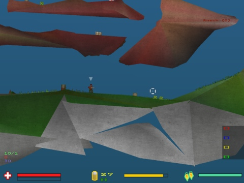

送金して登録版のsoldatを入手するにはこちらを参照してください。
登録することで利用できる機能をご覧になるには以下を参照してください。
どうやって登録版Soldatを入手するの？
Soldatは無料でプレイできますがさらに楽しむには登録を考えてみてください。
登録は良いことです。作者の開発を続けるやる気と資金が増えることでSoldatが続いているのです。
費用はたったの13.99ドル(USドル)。ですから考えてみてください。
良いことをして、Soldatのコミュニティの登録メンバーの一員になるという気持ちになれるだけではなく、
多くの機能が利用できるようになります。こちらがその例です：
カスタムプロフィール

カスタム設定をいくらでも保存できるようになります。
様々な設定が保存できることでゲームオプション、サーバー設定、プレーヤー名、画面設定などすぐに好きな設定に変更できます。
簡単に設定を全部変えてしまうことが出来るのです。上の画像はその一例です。
カスタムインターフェース

ゲーム内のインターフェースの外見、位置、様式を変更できます。
もし標準インターフェースに飽きたら簡単に変更できるのです。
以下は現在利用可能なインターフェースの画像です。
これだけで満足しないのであればプレーヤー作成のインターフェースをダウンロードすることやソフトを使ってインターフェースを自作することもできます。
|
|
|
|
|
|
|
 |
|

MP3プレーヤー

自分の好きなMP3形式の音楽がゲーム中聴けます。
'm3u'形式のプレイリストを'mp3'フォルダにコピーするだけです。どんなMP3プレーヤーでもこのプレイリストは作成できます。（Winampなど）
このようにして他のプレーヤーを虐殺している最中に、何千時間でもすばらしい音楽を堪能できるのです。

MP3音楽はゲーム中にF5を押すことで停止/再生、F6を押すことで次の曲が簡単に選択できます。
無制限のDEMO録画
未登録版Soldatでは3分しかDEMO録画(F8)ができません。完全版Soldatでは無制限にdemoが録画できるので、自分のプレイを全部保存して完全なムービーを作ることもできるのです！さあ半端なDEMOからおさらばしましょう！
解像度の変更
未登録版Soldatではデフォルトの 640x480しか使えません。登録後は800x600、1024x769、1280x1025、1600x1200など自由に変更できます。解像度が大 きいということはプレイ画面に多くの余裕が出来るということです。インターフェース、チャット、キルログ、スコア画面が小さくなりプレイ画面が広くなるの です！


しつこく表示される画面の省略
登録後は完全版をプレイできるようになり邪魔な画面や文を表示する必要がなくなります。起動時に登録を促すバナーがでなくなるということです。
Soldat界の名誉ある一員になれる
あなたがこのゲームを支えていることをみんなに知ってもらいましょう。登録するとすぐに
特別な印
(明るい黄色の星印) がスコア画面の横に常に表示されるようになります。
このおかげであなたはSoldat界の名誉ある一員となりみんなもそれを知ることとなります。
この星のおかげでみんながあなたのことを見分けられます。登録もしていない初心者に自分の名前を使われることもありません！

もし登録したくなったらこちらを参照してください。
他にも以下のような機能が利用できます:

色付きのジェット
登録したプレーヤーのみがジェットに独自の色をつけることができます。他のプレーヤーと同じ黄色いジェットが嫌なら登録してください！これがあればすぐに他のプレーヤーと見分けが付き間違われることもないでしょう。登録したプレーヤーのみがこの機能を利用できます。


インターフェースの修正
インターフェースメーカーがあれば標準のインターフェースを修正することができます。
武器や体力表示の位置が気に入らなければ簡単に動かして自分の好みに合わせることが出来ます。
インターフェースの自作
自分独自のインターフェースを描きましょう！インターフェースメーカーがあればとても簡単に作れます。
もし標準のインターフェースをすべて変えたくない場合、
照準のカーソルだけを自作することもできます！
何十もの独自のカーソルを作ったりダウンロードすることができるのです。
団体割引
2人以上の複数のために登録すると一気に安くなります。このオプションは複数人で買う方にお勧めしますが、一人で複数の登録キーが欲しい方でも利用できます
3つごとに無料.
つまり2つ買うとさらにもう1つが無料で追加としてもらえます。
4つ買えば2つの登録版soldatがさらに無料で手に入るということです。
この登録方法を利用するには通常Plimus.comかShareIt.com（下記のリンク）で例えば3
licenses/seatsのように選択してください。それから私に4人分のゲームを利用する姓名もしくはニックネームをメールで送ってください。そう
すれば4つ分の登録キーをお送りします。（注文IDも忘れずに記入してください。）
ですから考えてみてください。
Soldatは無料でプレイできます
がそれには支援が必要です。支援すれば気分も良くなり、新機能つきの完全版を入手することも出来るのです！
二つの支払い方法があります：
|
PLIMUS.COM 登録には13.99USドルがかかります。USドルでなくても受け付けています。すべての支払いは安全です。 ここをクリックしてSoldatのPlimus登録ページへ行ってください。すぐに完全版が手に入ります:
|
|
SHARE-IT ヨーロッパ向け (銀行振り込みが安いです。ドイツ語、フランス語、スペイン語、イタリア語に対応しています。) ここをクリックしてShare-Itの登録ページへ行ってください。すぐに完全版が手に入ります。:
|
登録は一生続きます。(今後全てのバージョンで有効。)
登録後にはすぐに完全版Soldatを楽しむための番号とソフトが送られてきます。
支払いが処理された後のわずか数分に登録が受け付けられます。すぐに完全版Soldatで遊べるのです！
もしなにか問題や質問があればPlimusかShare-itのサポートセンターか以下のアドレスから私にメールを送ってください。 michal.marcinkowski<AT>gmail.com
ありがとうございました！ではお楽しみください！


{kind=link}